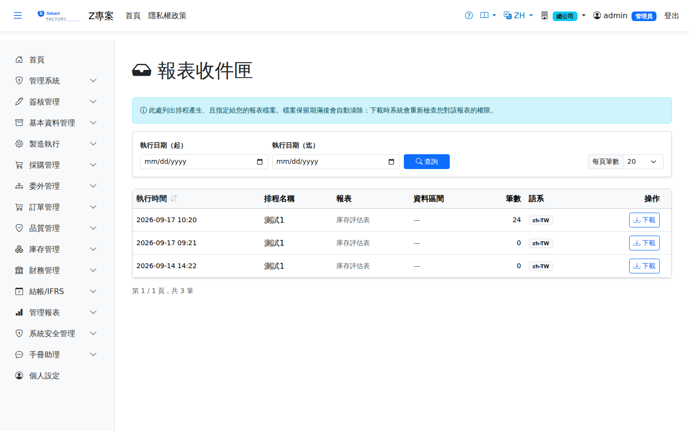

報表收件匣Report Inbox
排程產生、且指定給您的報表檔案都會出現在這裡。系統不以電子郵件夾帶報表——附件一旦寄出就永遠脫離權限控管，而放在這裡的檔案每次下載都會重新檢查一次權限。Report files produced by schedules and addressed to you appear here. The system never emails reports as attachments — once an attachment is sent it is permanently outside access control, whereas a file kept here has its permission re-checked on every download.

操作步驟How to use it
注意事項Points to note
清單只顯示成功且有檔案的執行；失敗或因權限被略過的執行請看「排程執行紀錄」。檔案超過保留期會被自動清除，此時下載會提示已清除，請重新執行排程。若您對該報表的權限已被取消，即使檔案還在也無法下載。The list only shows successful runs that produced a file; failed or skipped runs are on the Schedule Run History screen. Files are purged automatically once the retention period expires, and a download then tells you so — run the schedule again. If your permission for that report has been revoked you cannot download the file even while it still exists.
欄位說明Field reference
查詢條件Query criteria
| 條件Condition | 說明Guide |
|---|---|
| 執行日期（起）Run Date From | 只看該日期之後產生的報表Only reports produced on or after this date |
| 執行日期（迄）Run Date To | 只看該日期之前產生的報表Only reports produced on or before this date |
清單欄位List fields
| 欄位Field | 說明Guide |
|---|---|
| 執行時間Run Time | 報表產生的時刻，以廠別時區顯示（與其他畫面一致）When the report was produced, shown in the plant time zone (the same as every other screen) |
| 排程名稱Schedule Name | 產生這份報表的排程The schedule that produced this report |
| 報表Report | 報表種類Which report it is |
| 資料區間Data Range | 相對期間換算後的實際起迄日；無期間條件的報表顯示破折號The actual dates the relative period resolved to; a dash means the report takes no period |
| 筆數Rows | 報表內的資料列數；為 0 表示該期間無資料Number of data rows; 0 means there was no data for that period |
| 語系Language | 該份檔案的語言。收件人語系不同時會產生多份The language of that file. Several files are produced when recipients use different languages |